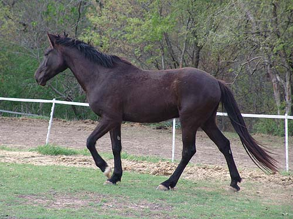
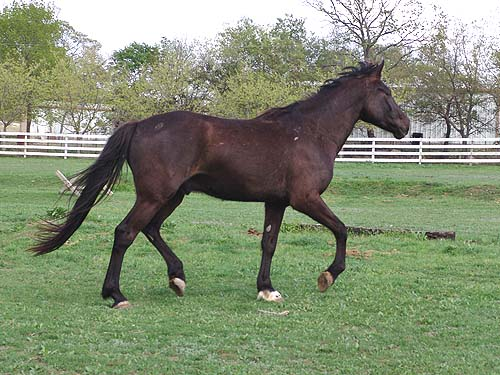
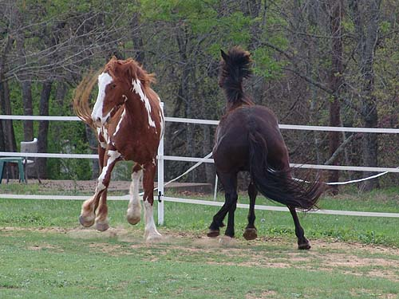
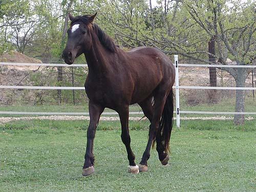
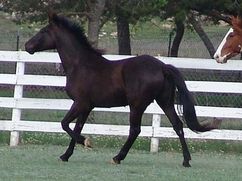

Miaren is back home Miaren's back home after a couple of weeks
at the kennels.
Our last ride out was lovely. I took Thuy
and Chrissie rode Miaren.
Miaren could lead or follow, walk/trot
and he led us through a number
of trails in the woods.

I really like how he's turning out.

He's better under tack about rounding
and going in a nice frame.

The fun of introducing new horses.
Miaren's as tall as Nero, but younger. Luckily he listened when Nero made
his dinosaur sound and there was minimal discussion.

Trotting around, he always kept an
ear on Nero.

He can still look like a youngster,
but quite a big one.